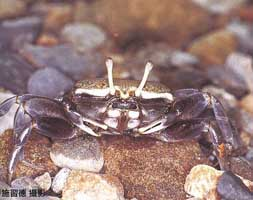
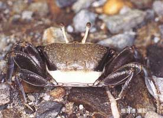
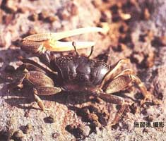
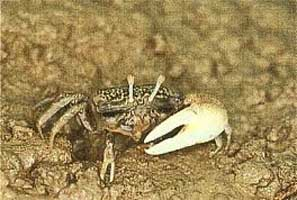
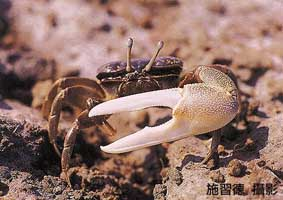

Fiddler Crabs
Uca formosensis
Taiwanese Fiddler Crab
Type
Information
Photos
Video
Art
References
Species List
Type Description
Uca formosensis
Rathbun, M.J. (1921) New species of crabs from Formosa.
Proceedings of the Biological Society of Washington
34:155–156.
Information
Subgenus
Xeruca
Common Names
Taiwanese Fiddler Crab, Formosan Fiddler Crab
Synonyms, Alternate Spellings, & Name Forms
Gelasimus formosensis
,
Uca (Thalassuca) formosensis
,
Uca (Tubuca) formosensis
,
Uca formosensis
Geographic Range
Indo-West Pacific: Taiwan
Download SVG line map of ranges.
Map data derived from:
Shih (1999)
External Links
Encyclopedia of Life
Wikipedia
iNaturalist
GBIF
Photos





Video
No videos available at this time.
Art
References
Beinlich, B., and H.-O. von Hagen (2006) Materials for a more stable subdivision of the genus
Uca
Leach.
Zoologische Mededelingen
80(4):9–32.
Crane, J. (1975)
Fiddler Crabs of the World: Ocypodidae: Genus Uca
. Princeton, NJ: Princeton University Press.
Hung, K.-J., and H.-C. Lin (2015) Genetic variability and population genetic structure of
Uca formosensis
populations in Taiwan west coast. Pp. 161–163 in
The 6th Conference on Taiwan Wetland Ecology
.
Lin, C.a.-C.i. (1949) A catalogue of brachyurous Crustacea of Taiwan.
Quarterly Journal of the Taiwan Museum
2(1):10–33.
Oliveira, L.P.H.d. (1939) Contribuição ao conhecimento dos crustaceos do Rio de Janeiro. Genero
Uca
(Decapoda: Ocypodidae).
Memórias do Instituto Oswaldo Cruz
34(1):115–148.
Rathbun, M.J. (1921) New species of crabs from Formosa.
Proceedings of the Biological Society of Washington
34:155–156.
Sakai, T. (1940) Bio-geographic review on the distribution of crabs in Japanese waters.
Records of Oceanographic Works in Japan
11(1):27–63.
Sato, H. (1936) The collections of the littoral animals of Formosa (4).
植物及動物 : 理論・應用 [Botany and Zoology]
4:1951–1957.
Takahasi, S. (1934) An ecological study of the littoral animals near the mouth of Tamsui.
Transactions of the Natural History Society of Formosa
24(130):1–14. {高橋定衛} {淡水河口附近の地域と沿岸動物}
Takahasi, S. (1934) The ecology of the Ocypodidae near the mouth of Tamsui.
Dobutsugaku Zasshi (Zoological Magazine)
46:73–74.
Takahasi, S. (1935) Ecological notes on the ocypodian crabs (Ocypodidæ) in Formosa, Japan.
Annotationes Zoologicae Japonenses
15(1):78–87.
Wu, Y.C., C.M. Ling, J. Shief, and Y.H.M. Wang (1962) Preliminary studies on the crabs found in the Tansui and the Keelung Rivers and the adjacent areas.
Quarterly Journal of the Taiwan Museum
15(3–4):193–210.
Yun, C.T., C.Z. Bo, and L.X. Zhu (2015) Feng shui of fiddler crabs' home: The effecct of soil texture on fiddler crabs' burrow morphologyh in intertidal mudflat. Pp. 275–279 in
The 6th Conference on Taiwan Wetland Ecology
. {陳彤昀, 陳章波 and 林幸助} {招潮蟹居家風水：潮間帶泥灘土壤質地對招潮蟹洞穴形態之影響}
{kind=link}